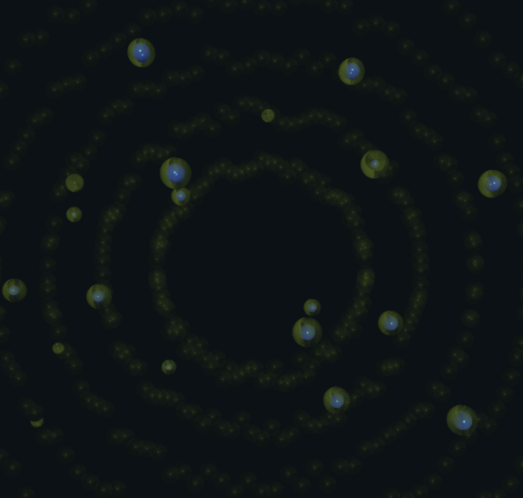
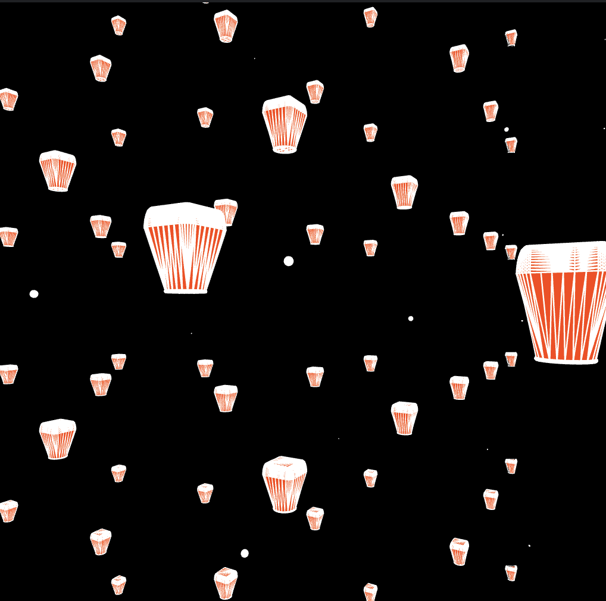
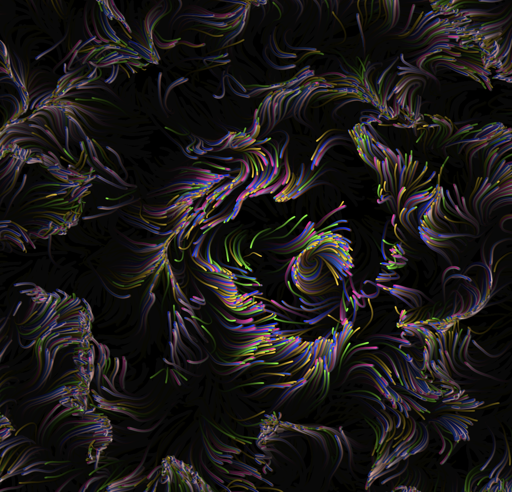
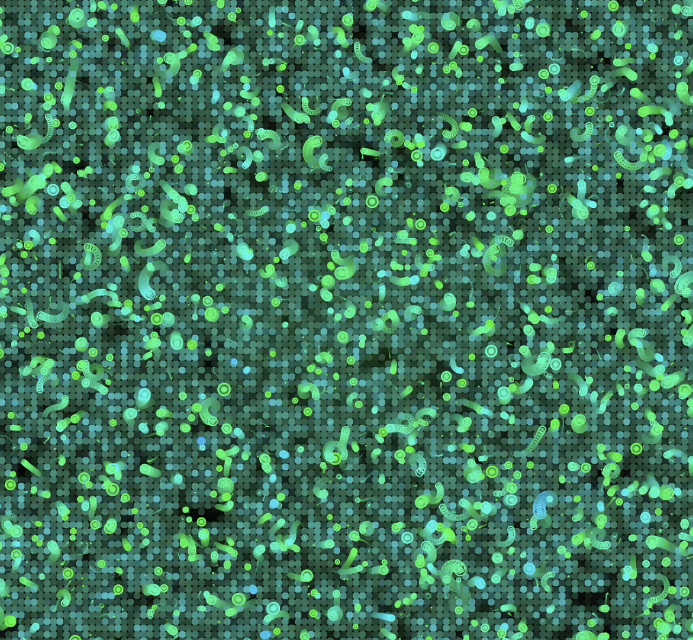

My Artworks

氣泡作為短暫存在的單位，在畫面中不斷生成、上升與消失。作品透過重複與隨機的生成邏輯，呈現數位系統中「出現—破裂—重組」的循環狀態，隱喻當代資訊環境中短暫被注意、又迅速消逝的感知經驗。

作品透過數位生成方式模擬胎兒過程，以極簡的節奏呈現，並邀請觀者思考：在科技介入下，生命的起點如何被觀看、被記錄。

天燈承載著願望與記憶，在聲音的牽引下閃爍，作品以光的節奏回應音樂，將聽覺訊號轉化為視覺回應。
作品將鋼琴聲轉譯為水的運動，在數位模擬中，聲音成為觸發水滴與漣漪的能量。

作品以 Perlin noise 作為生成基礎，建構由粒子與曲線組成的流動場域。雖路徑遵循同一套演算法規則，卻在隨機與連續之間形成獨特軌跡，呈現秩序與不確定性並存的狀態。

作品模擬微觀世界中粒子的運動：不同顏色、不同方向，像是細胞、氣泡或星際粒子漂浮，彷彿置身於色彩流動的海洋，感受不同方向的微妙互動與和諧。
六邊形的排列模擬自然界與數學中的蜂巢結構，但每個單元的大小與位置隨時間變化，作品用簡單的幾何形狀，營造出深邃的科技感與未來感。
多邊形曲線像光線折射般環繞旋轉，隨著漸近圓弧形成柔和曲線。作品將自然界光與色彩的流動抽象化，呈現秩序與柔韌並存的動態美感。
New works in progress...